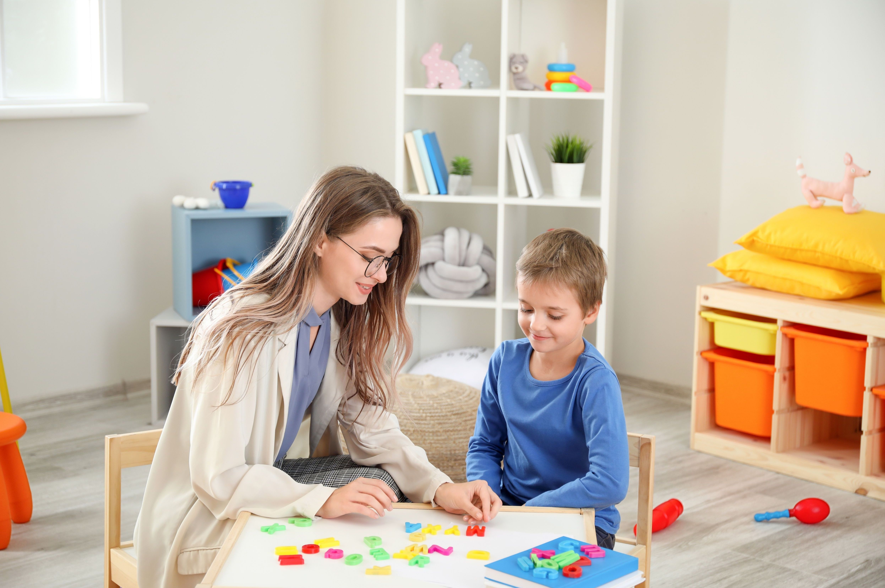
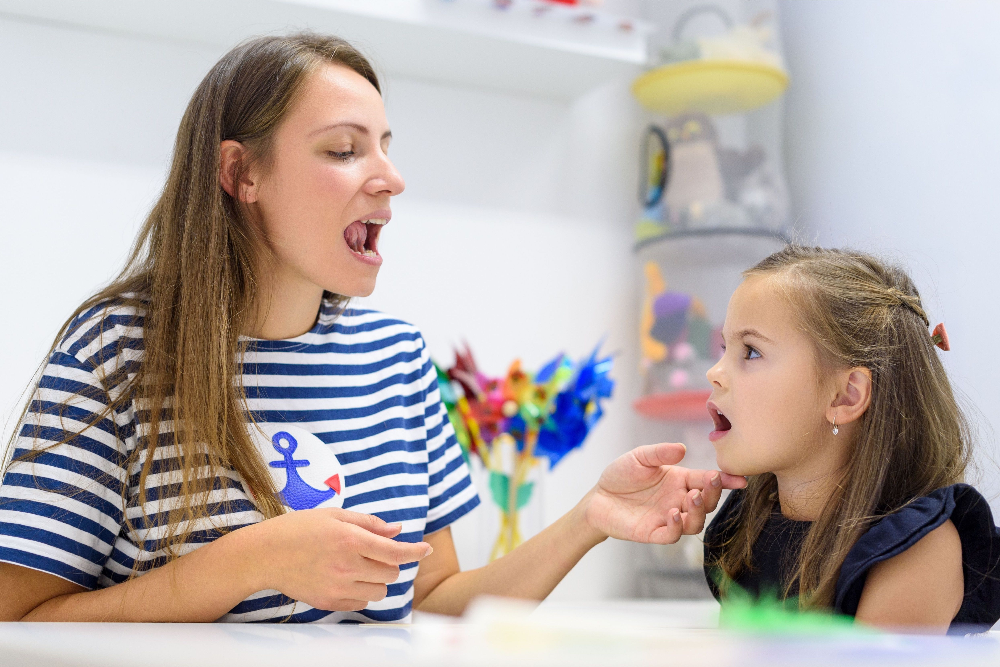
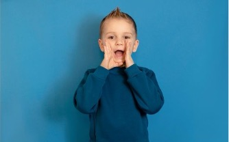
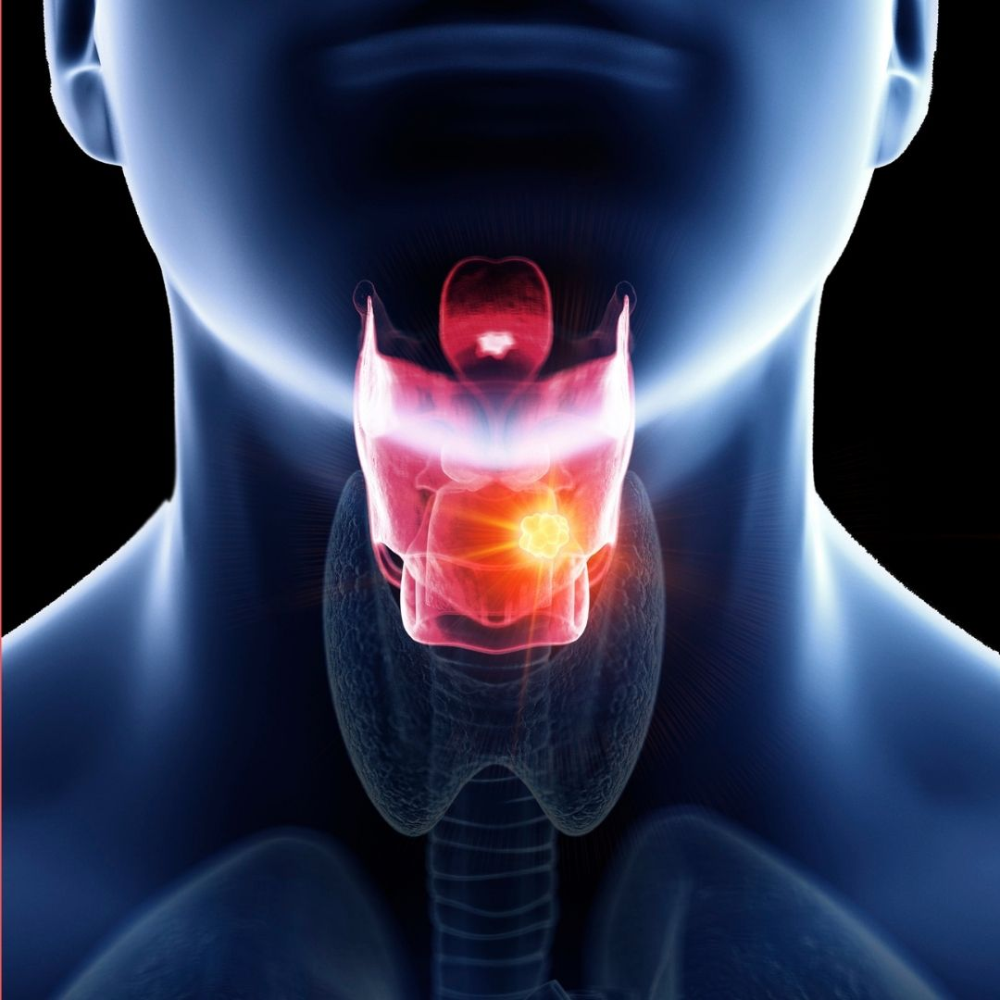
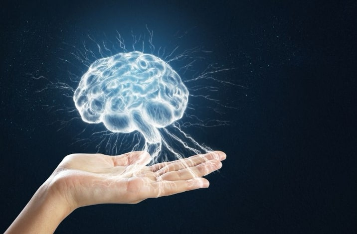
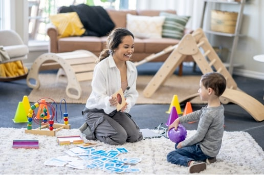
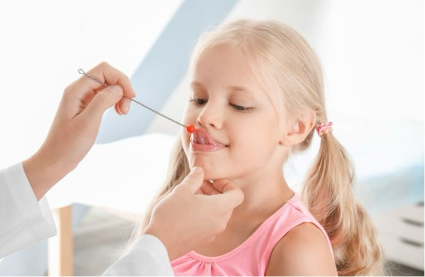
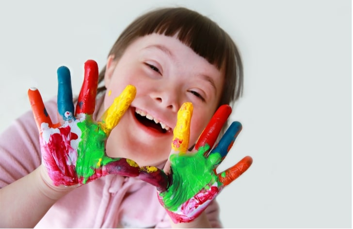

Kekemelik, konuşma akıcılığının bozulmasıdır. Erken müdahale ile kontrol altına alınabilir.
Afazi, beyin hasarı sonrası dil becerilerinde bozulmaya yol açan bir rahatsızlıktır.

Seslerin yanlış üretilmesi veya anlaşılır olmaması durumudur. Konuşma terapisi ile düzeltilir.

Çocukların yaşına uygun dil becerilerini kazanmada gecikme yaşaması durumudur.
Otizmli bireylerin sosyal ve dil becerilerini geliştirmeye yönelik özel terapi programları.

Ses tellerinde meydana gelen problemler nedeniyle sesin kalitesinde, tonunda ve yüksekliğinde değişiklikler.

Beyinden gelen konuşma sinyallerinin kaslara iletilmesi sürecindeki bozukluklar.

Otizmli bireylerin sosyal ve dil becerilerini geliştirmeye yönelik özel terapi programları.
Öğrenme güçlüğü, bireyin bilişsel kapasitesinden bağımsız olarak, okuma, yazma, matematik veya dil gibi akademik becerilerde belirgin ve kalıcı zorluklarla karakterize edilen nörogelişimsel bir bozukluktur.

Çocukluk çağı konuşma apraksisi, çocuğun konuşma kaslarını doğru sırayla ve koordineli bir şekilde hareket ettirmesini zorlaştıran nörolojik bir konuşma bozukluğudur.

Down sendromu, genetik bir farklılık olup bireylerde fazladan bir 21. kromozomun bulunmasıyla ortaya çıkar.